Selected work / Case study
MSN Academy — website and student learning platform
A vocational tech academy had a single scrolling page and no learning platform. I led the design work with one teammate, reviewed the approach with the project manager, and handed developer interns files they built into a working demo.
- Role
- Lead designer, two-person intern team
- Timeline
- 4 weeks of design work, Jul–Sep 2026
- Tools
- Figma, Figma Make, ChatGPT, Notion
- Outcome
- About 60 web and mobile screens, 5 prototype flows, a working demo built by developers
The developer-built demo of my designs: course catalogue, course page, certificate verification and student dashboard.
The problem
I audited the live site against the client’s requirements document. The site worked as one scrolling page with anchor links, which limits search visibility and makes it hard to add course and dashboard pages. The main button said “Enroll Now” without pointing to a course, and the course list had no filters.
The learning platform itself did not exist: no student dashboard, course player, quiz, certificate or checkout. Pricing, blog and FAQ pages from the requirements were missing, and the legal links in the footer went nowhere.
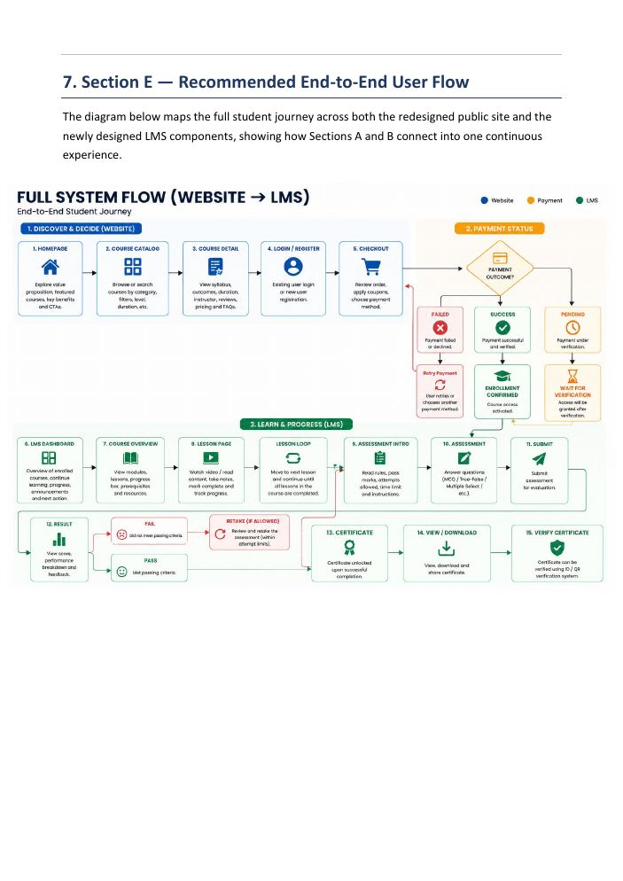
My process
- Audit. I drafted the UX audit with my teammate. We kept confirmed findings separate from open questions for the client, and confirmed scope with the project manager: wireframes and UI only, and the internship portal belonged to another team.
- Roadmap and wireframes. I wrote the roadmap and created the low-fidelity wireframes.
- Approval. I presented the wireframes to the project manager, compared the product with Coursera and other platforms, and explained the design rationale. They were approved.
- High fidelity. I generated screens in batches with AI tools, using type, spacing and colour choices I set, then rebuilt the details by hand: fonts, data, cards, the menu on every screen, and the fail and pending states. I prototyped the desktop flows and my teammate prototyped mobile.
- Handoff. I prepared the files for the developer interns and answered their questions while they built.
Key decisions
- Real pages instead of one scroll, so courses, pricing and verification each have their own address.
- Assessment as a set of states: rules and pass mark up front, a review screen that shows unanswered and flagged questions, a confirmation step, then separate pass and fail results.
- Certificates that can be checked. Each has an ID, and a public verification page returns valid, invalid or revoked.
- Local payment methods (Easypaisa, JazzCash, bank transfer) with a pending state, because bank transfers are not instant.
- A mobile menu and dashboard built for one-handed use.
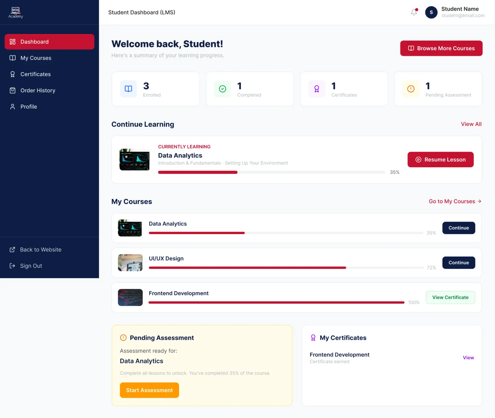

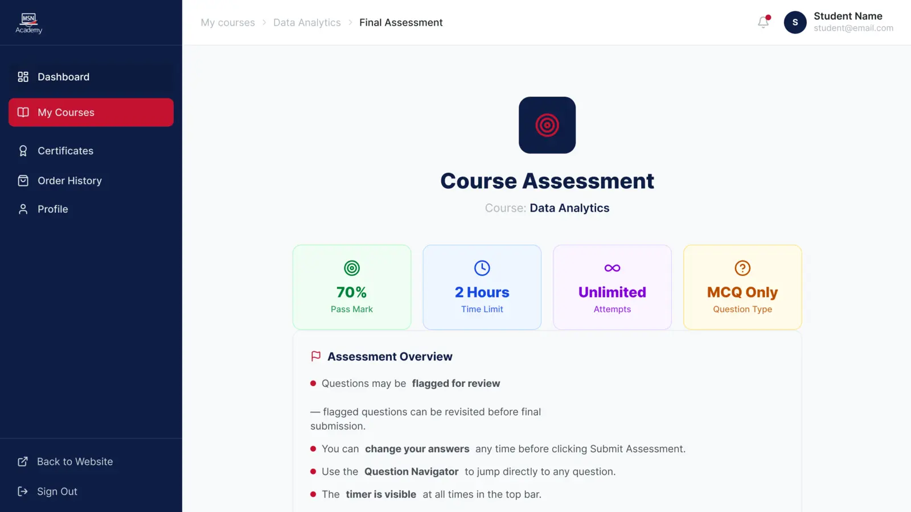
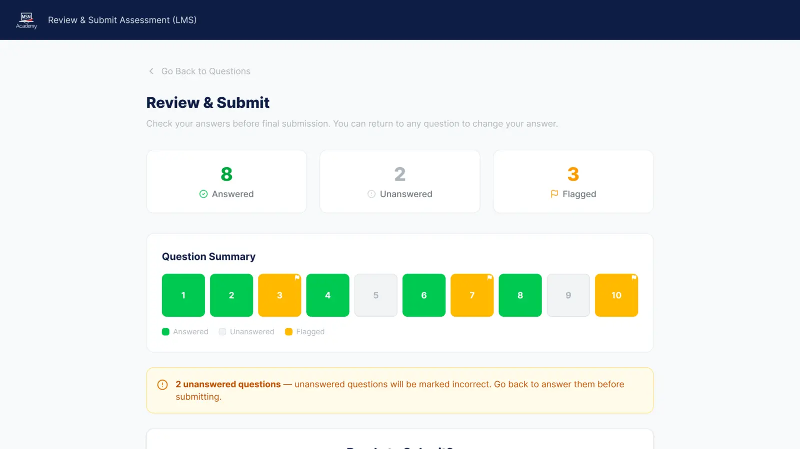
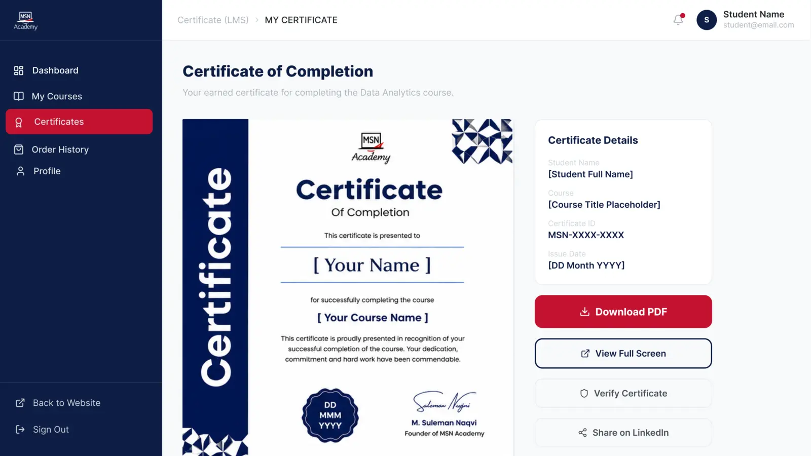
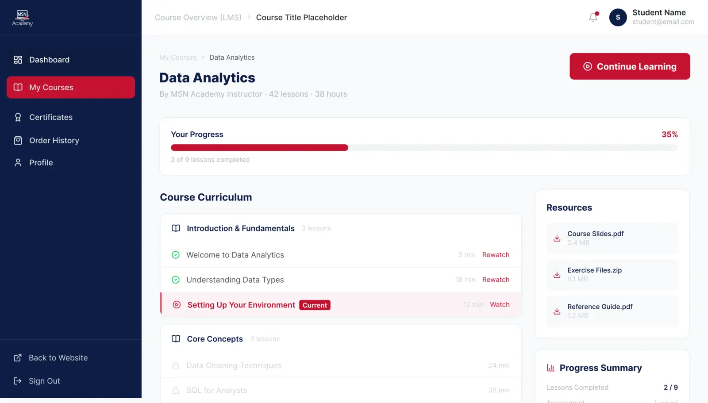
Mobile
The same flows redesigned for small screens, including a menu and the assessment.

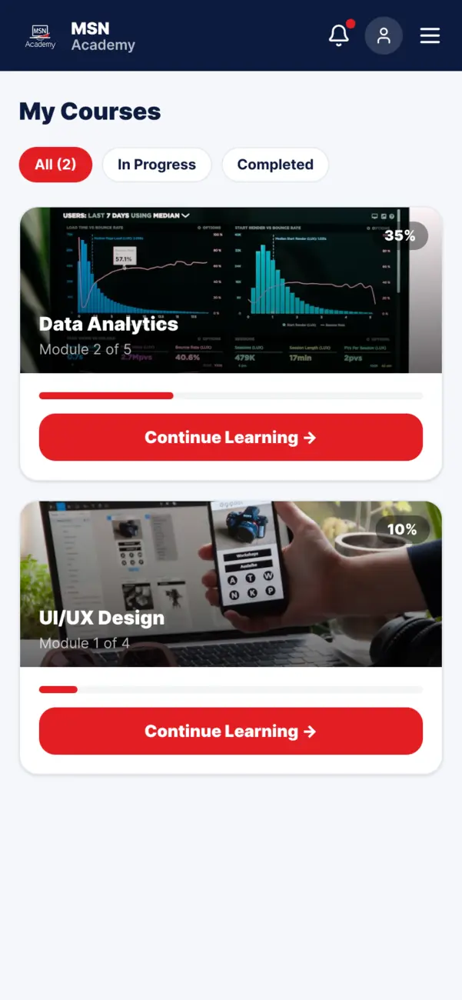
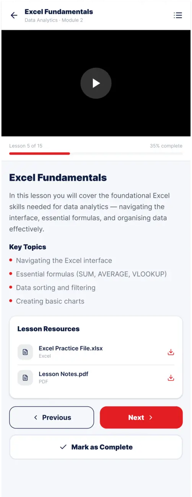
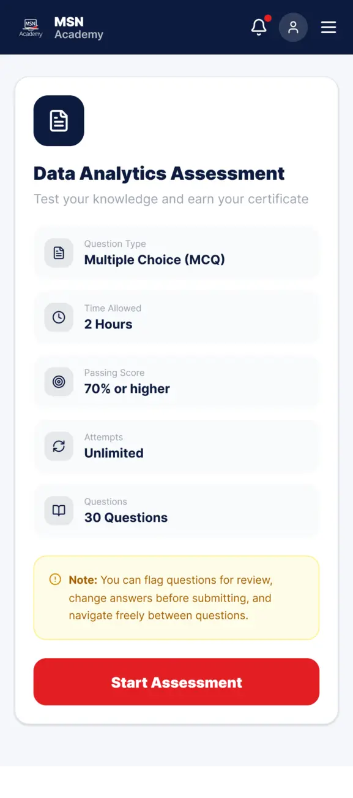
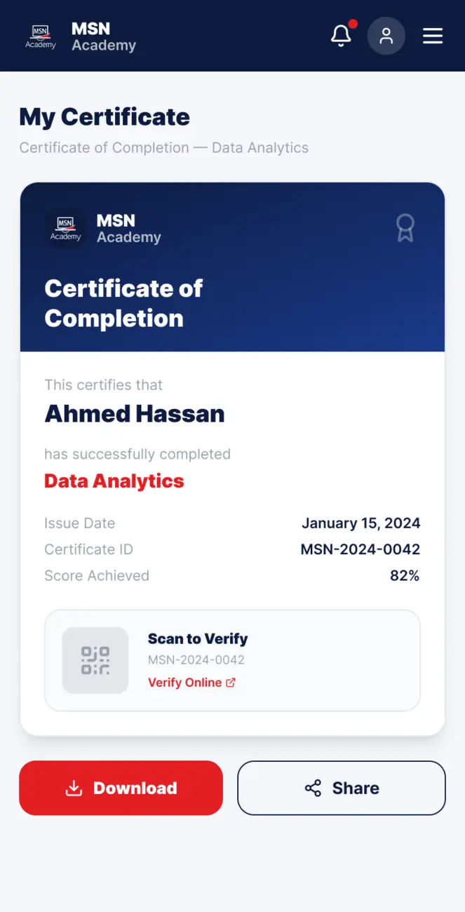
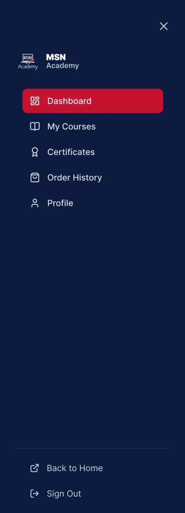
Public website
Home and catalogue pages with filters, matching the new multipage structure.
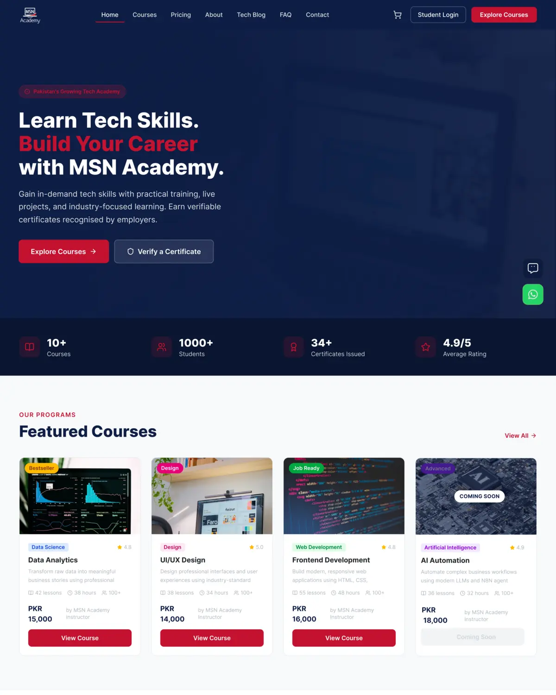
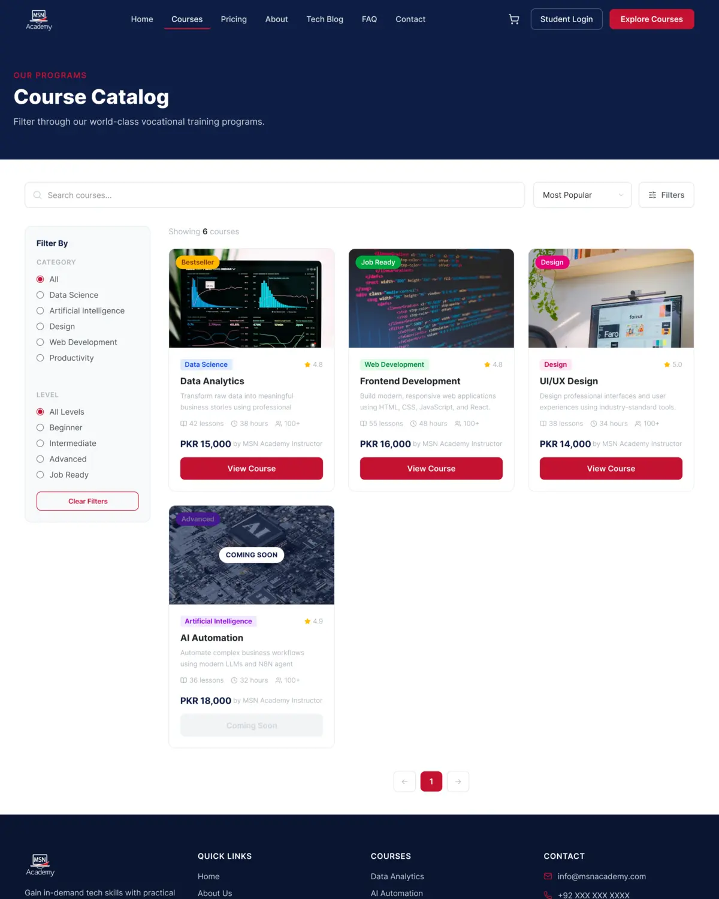
Reflection & next steps
- Run usability tests. The designs were approved by the project manager but never tested with students.
- Turn the palette and type into variables so developers and designers share one source.
- Ask the client’s open questions in the first week, since waiting for answers cost time.
- The demo’s assessment questions are placeholders, so the quiz flow is only partly working.